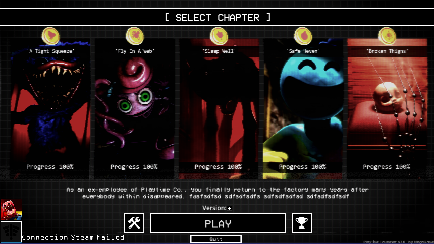
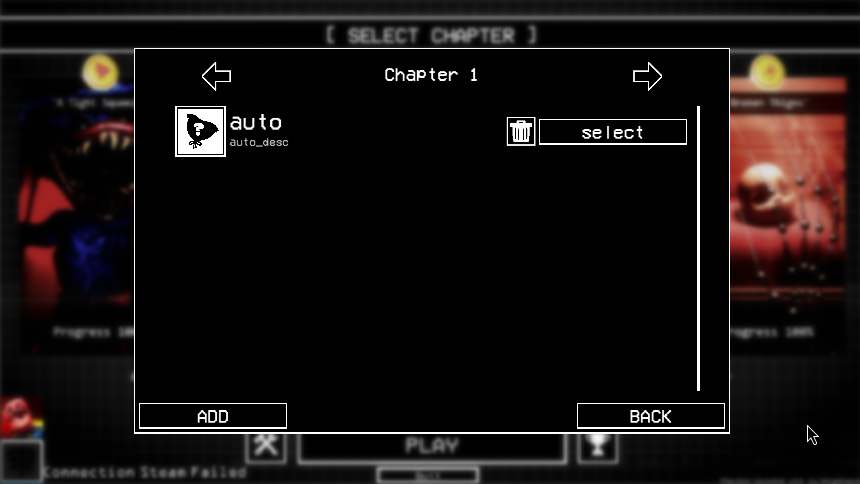
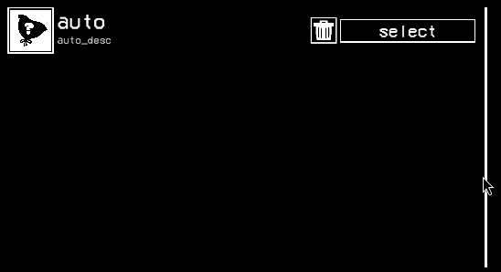
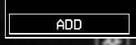
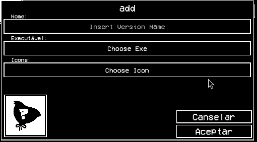

Cómo gestionar tus Versiones

1. Acceso: En el menú principal, sobre el botón grande de "PLAY", verás un icono pequeño. Este es el gestor de versiones.
(Nota: A veces el sistema requiere que hagas doble clic para abrirlo correctamente).

2. Panel: Una vez abierto, verás la ventana flotante de VERSIONS sobre la interfaz principal.
3. Selección de Capítulo: Usa las flechas laterales para elegir el capítulo que quieres modificar (Cap 1 al 5). Si ya lo tienes en Steam, es posible que ya aparezca una versión por defecto.

4. Navegación: Al cambiar de capítulo, el panel se actualizará mostrando solo las versiones que pertenecen a ese capítulo específico.

5. Añadir Nuevo: Haz clic en el botón con el símbolo "+" situado en la esquina inferior izquierda.

6. Configuración del .exe: Rellena los datos en la ventana emergente:
- Nombre: Etiqueta para identificarla (ej: "Mod Gráfico").
- Path: Selecciona el archivo
.exereal del juego. - Icono: Puedes dejar el predeterminado. Dale a Aceptar para guardar.
7. Selección y Borrado: Para que el launcher use tu archivo personalizado, debes darle al botón "Seleccionar Ver". Si deseas eliminar una entrada, usa el icono de la papelera (esto borra el acceso directo en el launcher, pero NO borra tu archivo .exe del disco duro).